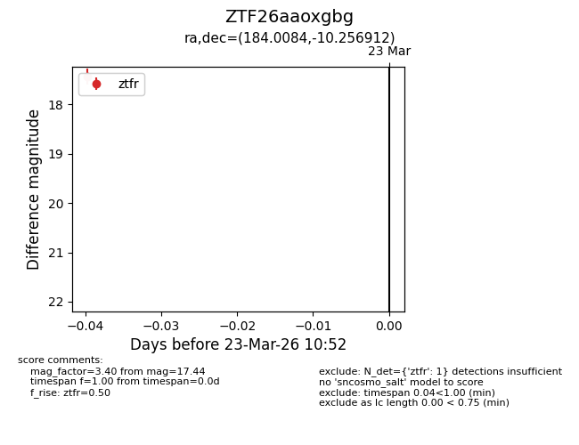
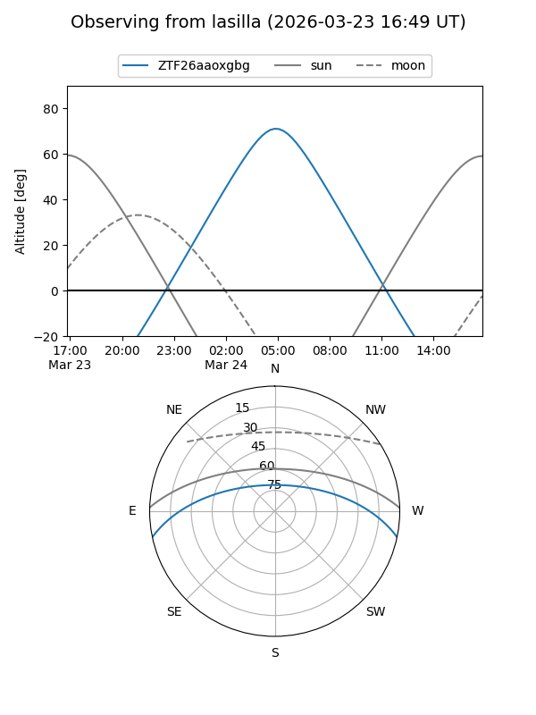
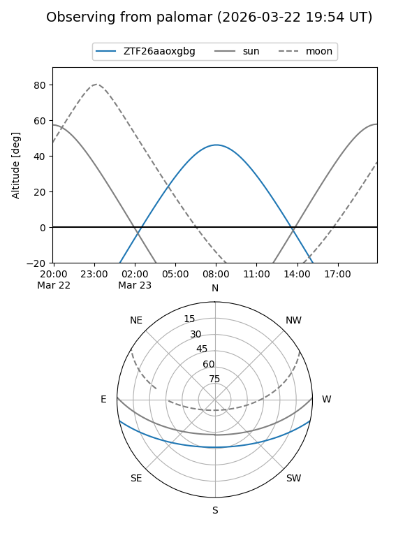

ZTF26aaoxgbg
Target ZTF26aaoxgbg at 2026-03-23 10:55
Aliases and brokers:
FINK: link
Lasair: link
ALeRCE: link
alt names
ZTF26aaoxgbg (ztf,fink_ztf)
Coordinates:
equatorial (ra, dec) = 184.0084,-10.25691
equatorial (HMS+DMS) = 12:16:02.02,-10:15:24.88
galactic (l, b) = (288.8105,+51.64148)
Flags:
Photometry:
last ztfr=17.44
1 ztfr detections
Lightcurve

Visibility


Additional plots